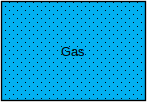
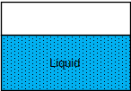
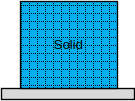
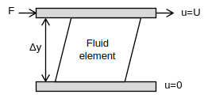

Fluid mechanics
Fundamentals
Definition of a fluid
Fluids are not able to resist shear stress and deform under it as molecules are not attached and are free to move
Gasses and liquids are both fluids, solids, typically, are not
The differing characteristics are largely due to molecular structure
Gasses
Gasses take both the shape and volume of their container
They have widely spaced molecules with weak cohesive forces
Molecular movement is very high
Properties are easily affected by changes in temperature and pressure
Easily compressible due to high molecule spacing
They have no free surface and are not dominated by gravity, except in buoyancy

Liquids
Liquids take the shape of their container, but not its volume
They have closely packed molecules with strong cohesive forces
Molecules are relatively free to move
They create a free surface and are dominated by gravity
Properties vary only slightly with changes in temperature and pressure
Not easily compressed; often considered incompressible

Solids
Solids are able to resist shear stress by static deflection
The spacing between molecules is generally very low
The individual molecular movement is very low
They are made up of structured and rigidly attached molecules

Fluid continuum
Fluid is treated as a continuum for calculation purposes, instead of modelling individual behavior of molecules, and average conditions assumed
This is accurate, except when the number of molecules is low and the spacing between them is great (i.e. gasses at very low pressures)
Dimensions and units
There are four primary dimensions in fluid mechanics:
- Mass (kg)
- Length (m)
- Time (s)
- Temperature (K)
All other dimensions used in fluid mechanics can be derived from these
All equations must be dimensionally homogeneous - each additive must have the same dimension
All equations must have consistent units - each additive must have the same units
Fluid properties
The following properties help to define all fluids:
Density
Density, \(\rho\), is ratio of the amount of mass, \(m\), a substance has to its volume, \(V\), measured in \(\frac{kg}{m^3}\)
Pressure
A ratio of the pressure that a fluid exerts on a given surface to the area of that surface, measured in \(\frac{N}{m^2} = Pa = 10^{-5} bar\)
All fluids have pressure
Gauge pressure is set such that at sea level, a gauge will read zero
Absolute pressure, on the other hand, includes the pressure of the atmosphere, such that at sea level, absolute pressure is approximately 101325Pa
Static pressure
Static pressure is the pressure that a fluid is at when nothing is moving and it is at rest, generated by the depth, \(h\), of the fluid and gravity, \(g\)
Dynamic pressure
Dynamic pressure is pressure within a fluid which is generated by the velocity, \(u\), of either the fluid or a surface
Total pressure
Total pressure is the sum of those pressures
Temperature
Temperature, \(T\), relates to the average kinetic energy of atoms and molecules in a system, measured in \({}^\circ C=273.15K\)
At absolute 0, there is no molecular motion and so this is the lowest possible temperature
Viscosity
A fluid property responsible for a fluid's resistance to shear stresses
There are two types of viscosity
Dynamic
Derived from a proportionality constant of shear stress, \(\tau\), with velocity gradient, \(\frac{du}{dy}\), measured in \(Pa s = \frac{N s}{m^2} = \frac{kg}{m s}\)

Dynamic viscosity is proportional to the inertial forces
Kinematic
Kinematic viscosity, \(\nu\), is related to the dynamic viscosity, \(\mu\), by the fluid density, \(\rho\), measured in \(\frac{m^2}{s}\)
Kinematic viscosity is proportional to the viscous forces
Surface tension
Surface tension, \(\gamma\), is the result of different forces between molecules of two adjacent substances, often a liquid and a gas, measured in \(\frac{N}{m}\)
It is half the ratio of the force, \(F\), holding a fluid in place, to the length of the surface, \(L\)
A droplet of liquid free of all other forces is exactly spherical due to surface tension
Forces between molecules of a liquid are bound to each other, and so they are cohesive, this is why liquids tend to remain as one body, rather than filling their volume as gasses do
Forces between the molecules of a liquid and its solid boundary give rise to adhesion, and so the liquid will spread across the surface, increasing the contact area
Compressible fluids
In addition to those listed above, the following properties are additionally considered for calculations where a fluid is thought to be compressible
Bulk modulus
The bulk modulus, \(B\), is used to define how much a system compresses, measured in \(Pa\)
It relates a change in pressure, \(dp\), to the change in volume, \(dV\)
Compressibility
Compressibility, \(K\), is the inverse of bulk modulus, measured in \(\frac{1}{Pa}\)
Mach number
The Mach number, \(M\), of a fluid is a ratio of the fluid speed, \(u\), to the speed of sound, \(a\), in that fluid
When the Mach number is above 0.3, a fluid is generally considered compressible
Typically, liquids are modelled as incompressible, but gasses are more easily compressed and so usually require compressibility calculation
Equations of state
Equations of state are used to relate the pressure, \(p\), mass, \(m\), volume, \(V\), and temperature, \(T\), of a gas
Gasses have a gas constant, \(R\), which helps to define the gas
For a perfect gas, the equation of state is:
Or:
Flow classification
The following classifications exist to enable selection of appropriate calculations
Internal and external flows
Internal flows are flows between bounding surfaces, such as in pipework
External flows are flows where a body is surrounded by a fluid, such as flow over an aircraft wing
Laminar and turbulent flows
Laminar flow tends to flow in straight lines, with no mixing
Turbulent flow, on the other hand, fluctuates in direction, causing mixing within the fluid
Steady and unsteady flows
Steady flows are those which are not considered to change over time; the fluid properties at a set point remain constant
Unsteady flows, on the other hand, is time dependent, otherwise known as transient, and the fluid properties at a given location will change over time
Compressible and incompressible flows
Compressible flows are those where the compressibility of the fluid is significant, typically when the Mach number is above 0.3
Incompressible flows are unrealistic, but can be assumed when the Mach number is low
Frames of reference
There are two typical frames of reference for fluid mechanics:
- Lagrangian focusses on pressure changes that a single particle experiences through space and time
- Eularian focusses on calculating the whole pressure fields of the flow pattern
Eularian is generally most suited to fluid mechanics calculations